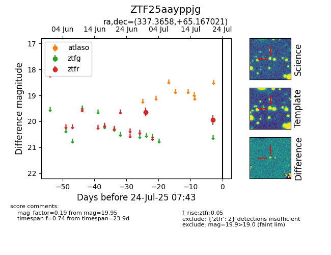

Target ZTF25aayppjg at 2025-07-24 07:43, see:
FINK: fink-portal.org/ZTF25aayppjg
Lasair: lasair-ztf.lsst.ac.uk/objects/ZTF25aayppjg
ALeRCE: alerce.online/object/ZTF25aayppjg
alt names
ZTF25aayppjg (ztf,fink)
coordinates:
equatorial (ra, dec) = (337.3658,+65.16702)
galactic (l, b) = (108.7313,+6.28672)
photometry
last ztfr=19.95
2 ztfr detections
